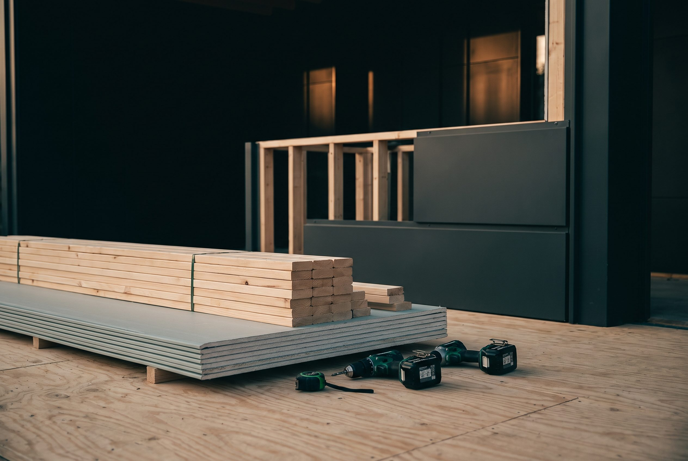
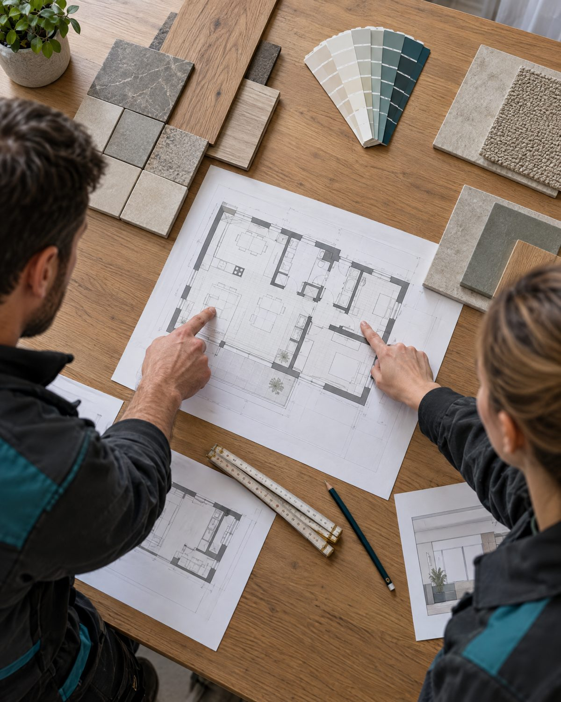
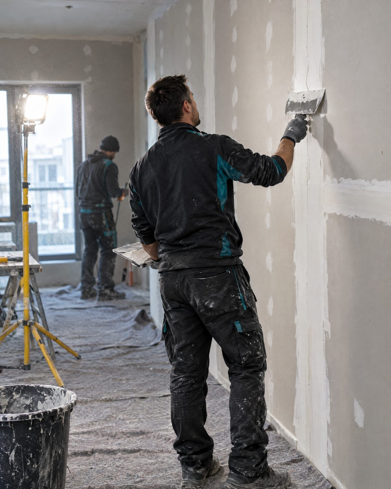
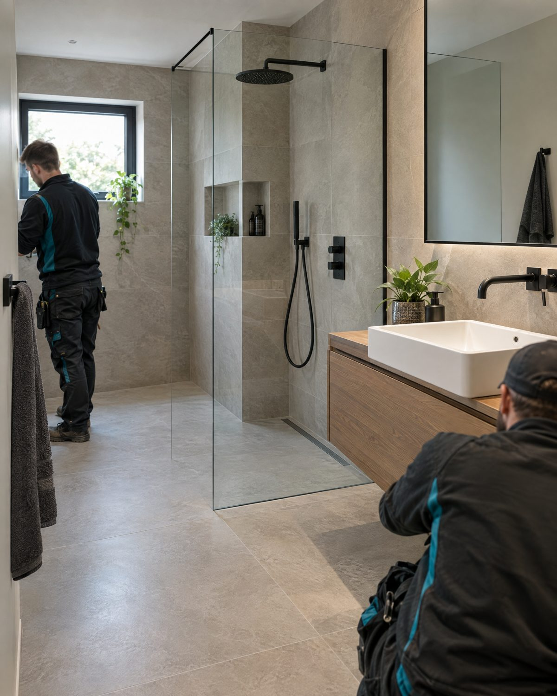
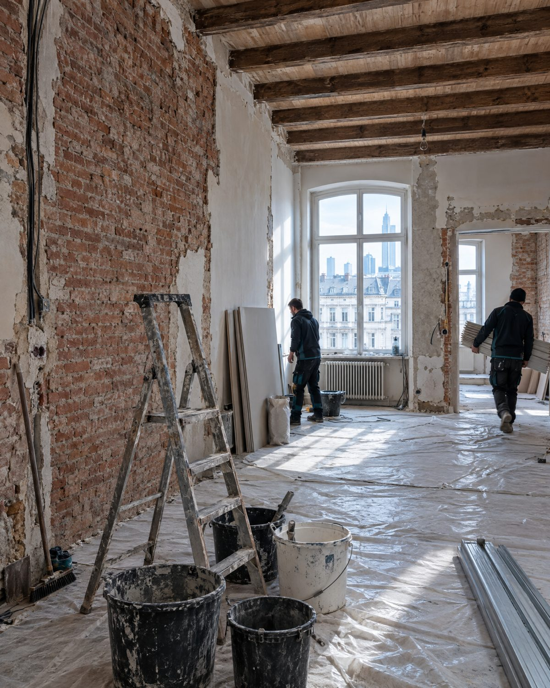
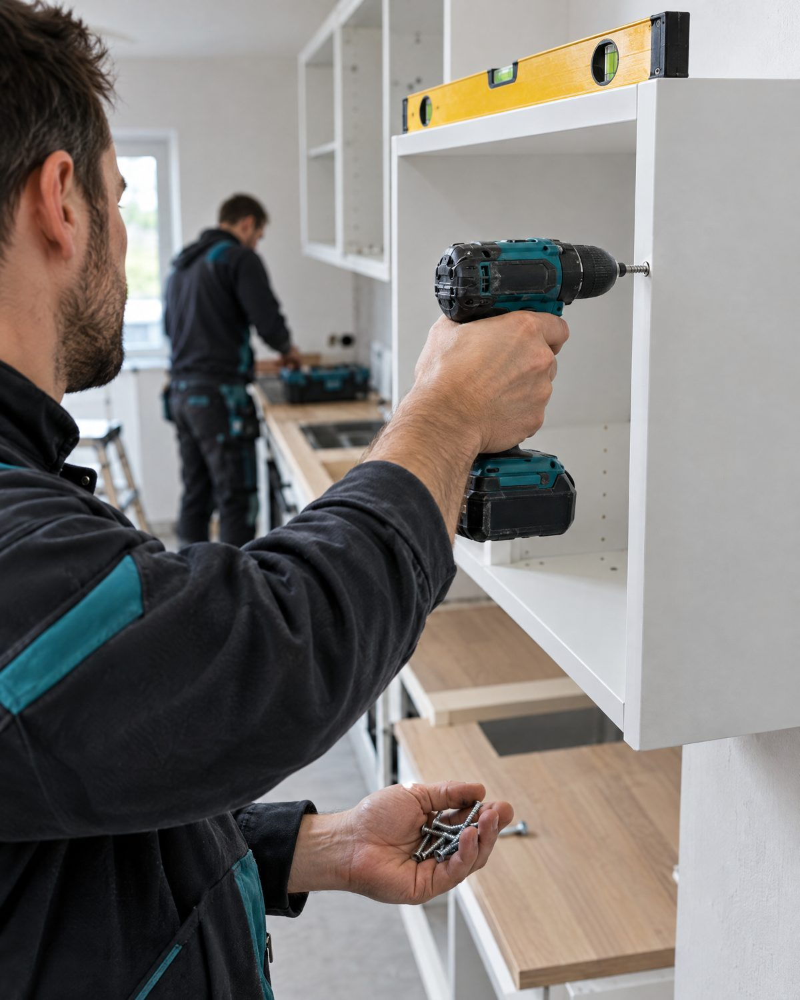
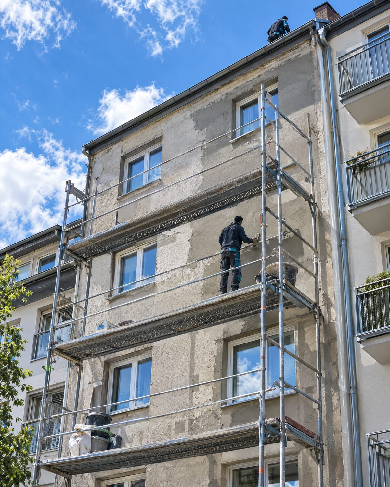

Leistungen · Bau, Renovierung & Sanierung
Renovierung und
Sanierung deutschlandweit
Vom Trockenbau bis zur kompletten Sanierung: Wir übernehmen Bauleistungen für Privathaushalte, Gewerbeobjekte und Neubauprojekte — sorgfältig geplant und handwerklich sauber umgesetzt.

Planung & Beratung
Gute Ergebnisse beginnen mit einem klaren Plan.
Bevor gebaut wird, schauen wir uns Ihr Objekt vor Ort an und besprechen mit Ihnen, was Sie vorhaben. Wir planen Räume, Küche und Bad, beraten bei Farben und Materialien und machen Ihr Vorhaben auf Wunsch mit einer 3D-Visualisierung sichtbar. Sie erhalten einen nachvollziehbaren Kostenvoranschlag, und während der Arbeiten koordinieren wir alle beteiligten Gewerke.

Innenausbau
Wände, Decken und Böden, sorgfältig ausgeführt.
Vom Trockenbau über Spachtel- und Malerarbeiten bis zum fertigen Boden: Wir bauen Ihre Räume innen so aus, wie Sie sie sich vorstellen. Wir verlegen Fliesen, Parkett, Vinyl und Laminat, gestalten Wände mit Dekorputz, hängen Decken ab und setzen Innentüren. Auf Wunsch dämmen wir auch und sorgen mit Akustikdecken für eine ruhigere Raumwirkung.

Bad & Sanitär Neu
Ein neues Bad, das zu Ihrem Alltag passt.
Wir sanieren Ihr Bad komplett oder in Teilen, mit neuen Fliesen, Sanitärkeramik und Armaturen. Statt der Badewanne bauen wir eine bodengleiche Dusche ein. Wer vorsorgen möchte, bekommt ein barrierefreies Bad, das auch im Alter bequem nutzbar bleibt.

Sanierung & Renovierung
Aus alten Räumen wird wieder ein Zuhause.
Ob Altbau, Wohnung nach dem Auszug oder Gewerbefläche: Wir renovieren und modernisieren Ihr Objekt von Grund auf. Dazu gehören auch Schimmel- und Wasserschadensanierung, Umbauten und die Unterstützung bei Neubauprojekten. Vermietern helfen wir, die Wohnung zwischen zwei Mietern schnell wieder bezugsfertig zu machen.

Montage & Technik
Fachgerecht montiert, vom Küchenschrank bis zur Klimaanlage.
Wir bauen Küchen und Möbel auf, setzen Türen und Fenster ein und montieren Einbauschränke, Leuchten, Rollläden und Sonnenschutz. Auch Klimaanlagen montieren wir. Sie bekommen alles aus einer Hand und müssen keine einzelnen Handwerker koordinieren.

Rückbau & Gebäudehülle
Platz schaffen und das Gebäude von außen schützen.
Wir übernehmen Abbrucharbeiten, zum Beispiel vor einer Sanierung, und arbeiten an Dach und Fassade. So bleibt Ihr Gebäude dicht und gepflegt und behält seinen Wert.
Warum BRU
Unser Team vereint Handwerk aus einer Hand: Innenausbau, Sanierung, Montage und Rückbau ohne Reibungsverluste zwischen mehreren Gewerken. Sie sprechen mit einem festen Ansprechpartner, der Ihr Projekt von der Planung bis zur Umsetzung begleitet.
Unverbindliches Angebot anfragen.
Schildern Sie uns Ihr Bauvorhaben — wir melden uns kurzfristig mit einer transparenten Einschätzung.
Jetzt anfragen